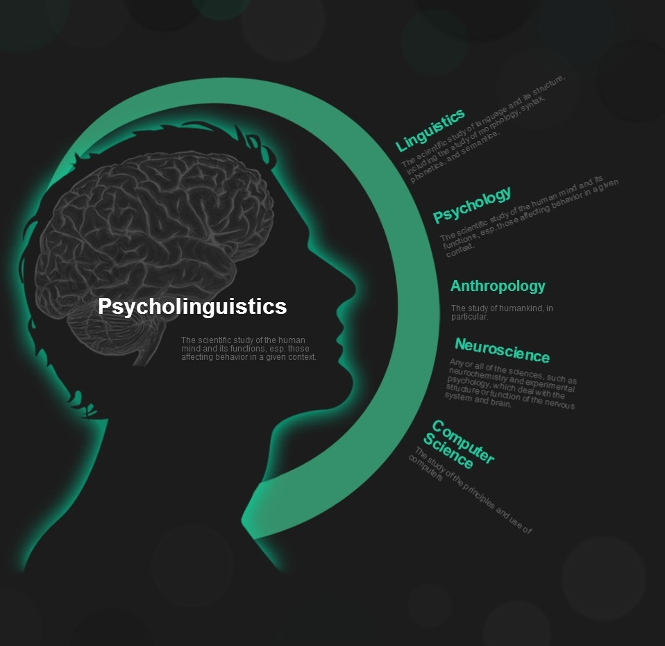

The “Shipt” project is a research project I was involved in from start to finish at the Social Innovations Group at U of M School of Information. We evaluated the feasibility of an online grocery delivery application, “Shipt”, in alleviating the transportation challenges faced by many living in the inner city areas.
The Coalitions, Hierarchy, Individual Motivated Processes Lab at the U of M Ross School of Business focuses on leadership behaviors, specifically, two distinct types of leaders: the dominance oriented leader, and the prestige oriented leaders. As a research assistant, I helped survey designing and content creating for a online stimulation of leader-follower interaction.
The psycholinguistics labs is interested in finding out how sound, semantics, and other factors affect second language learning.
(ongoing)